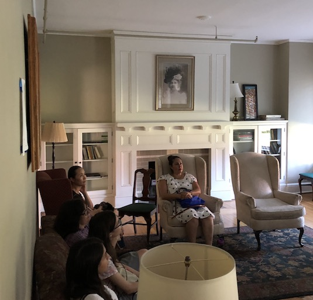
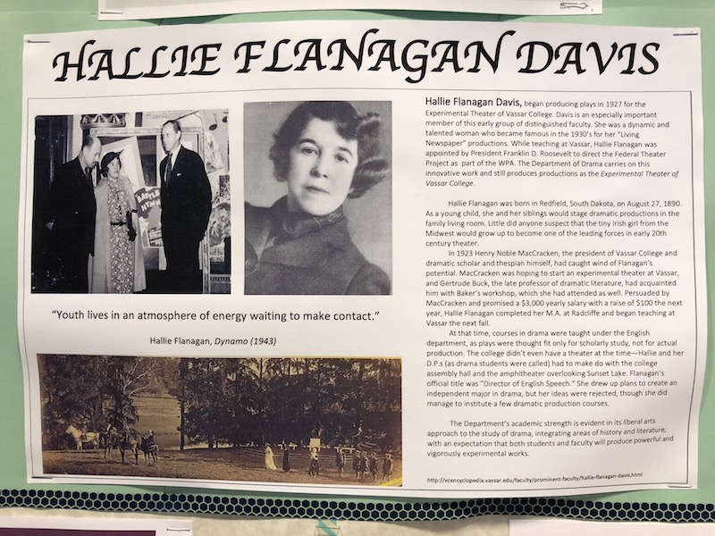
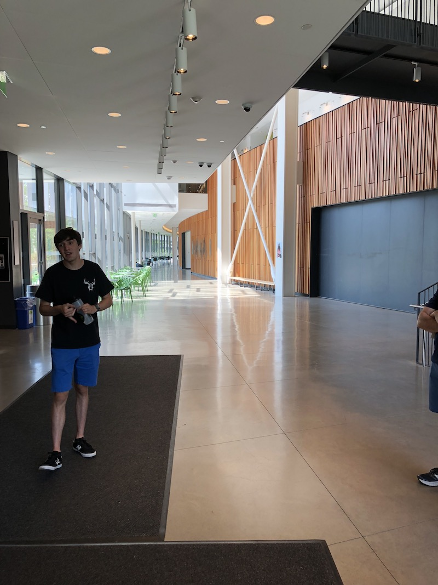
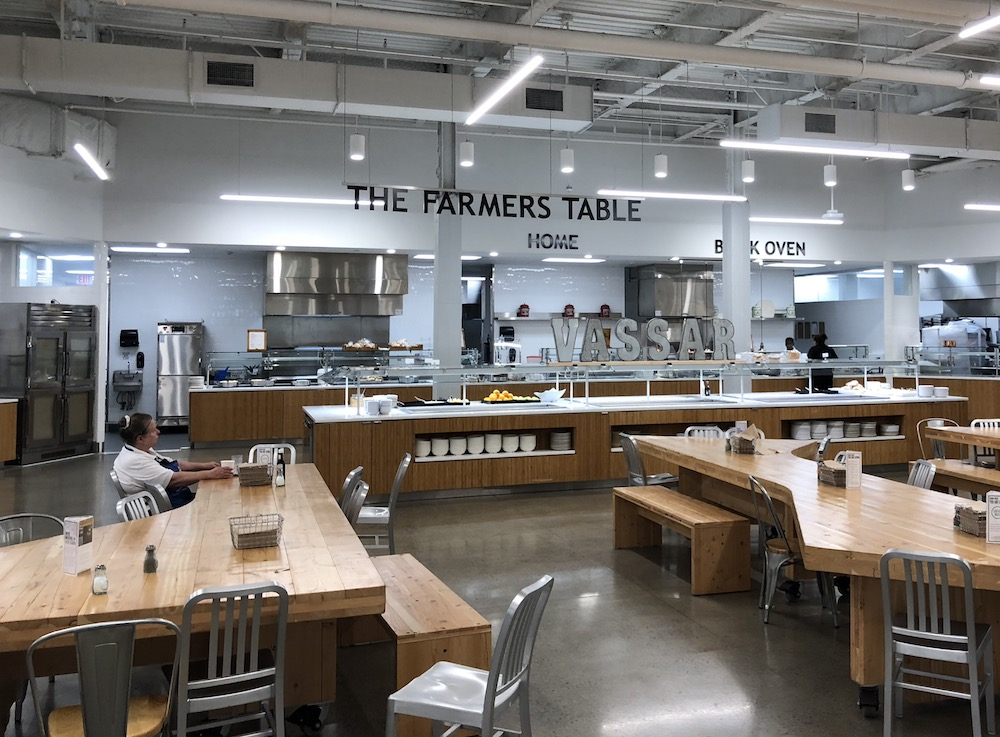
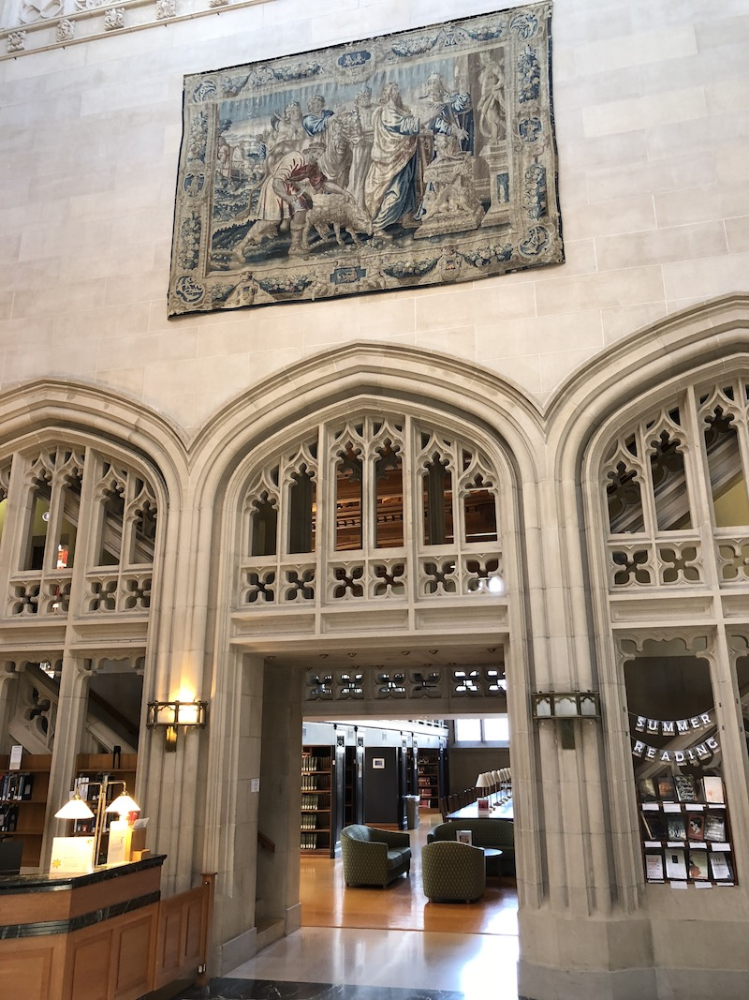
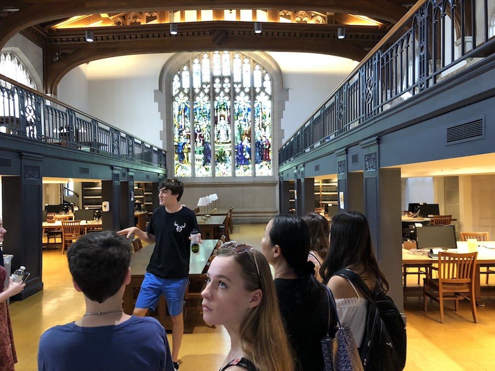
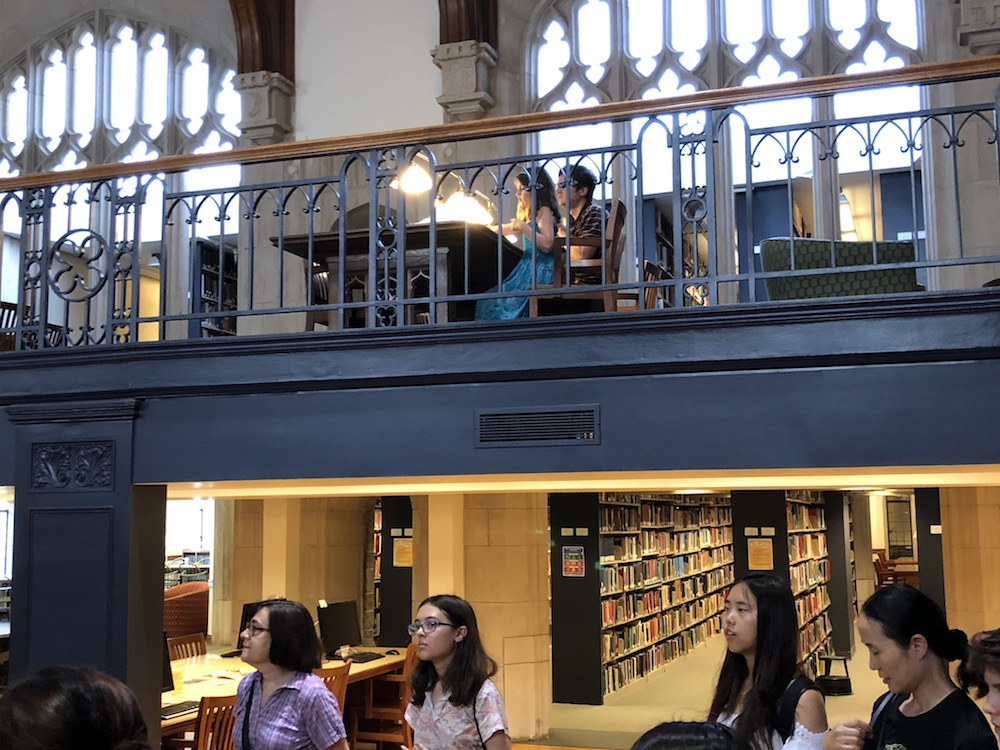
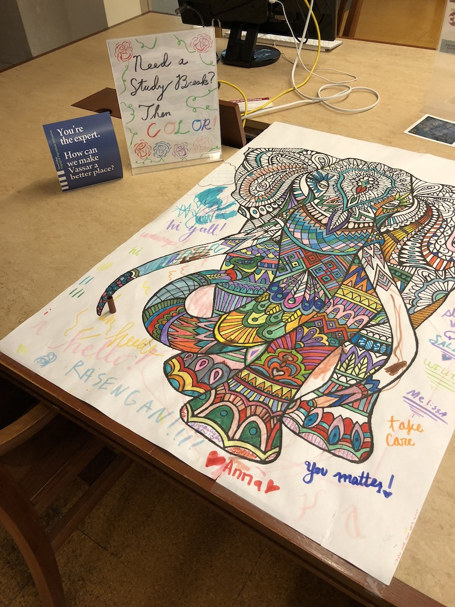

If you've been reading this series so far, you know that we've visited a number of small liberal arts colleges that might be of interest to my daughter: Macalester, Carleton, Barnard, Bard, and now, Vassar. We visited there on July 3, 2018 (I think - my calendar is a little muddled). I'm posting this well after our visit, and really need to add a few more: Since the Vassar visit, we have also checked out Leiden University College, Bates, Bowdoin, and Wellesley.
With Vassar we are now talking about the, um, "filet" of the small college world (if you have seen the movie "The Squid and the Whale," note a bit of reverse irony in the use of the word "filet" here). Vassar is one of those New England schools like Williams, Amherst, etc., that define the very template of the small liberal arts college: Colleges like Carleton are built on this model. Actually, like Carleton, Vassar is sort of in the second generation of small liberal arts colleges; while schools like Williams and Amherst were founded in 1793 and 1821 respectively, Vassar and Carleton were founded in 1861 and 1866. Still, Vassar feels older and more established than Carleton. Some of the buildings have the scale of Harvard's Sever Hall: Big, sturdy, monumental. And Vassar is rich: an endowment of about $1B.
With Vassar, we really got the impression that this college can support a student in whatever she or he wants to do. The visit started in their admissions building which was an architecturally correct Arts and Crafts-era house, with Mission-style furniture and light fixtures. There were a lot of people there: more than for any of our visits to other colleges. Like Carleton the visitors were all white (Bard's visitors were more diverse). Some of the kids seemed downright glamorous, so I think on the class scale, we were in somewhat different territory. Parents were trimmer and better dressed than what we saw at other institutions.
An admissions officer provided an extremely polished introduction to the college; it was very tight and very clear, with no apologies (I have noticed that introductions from admissions officers often have subtle indications of what a college might be embarrassed about: location, weather, physical plant; none of that here). After this welcome we were swiftly divided up into tour groups. There were two groups, one led by a young woman, the other led by a young man. We got the guy. He told the story of the college pretty well but seemed kind of absent-minded and the whole tour wasn't as warm and generous as what we experienced at Bard.
A key thing about Vassar is that it was once an all-women's college -- one of the historic "Seven Sisters." Our tour guide told some of the story. The campus went co-ed in 1969. The older dorm lounges had more refinement than I have seen at other colleges, which I suppose fits the profile of an all-women's college for the elite.  Incidentally, there were Steinway pianos everywhere, apparently because Steinway's daughters went to Vassar. I asked the question: When Vassar admitted men in 1969, did they augment the student headcount, or did they have to reduce the number of women in order to house the men? The tour guide didn't know, which was too bad: It seems like a pretty fundamental part of Vassar history. It turns out that the story is incredibly interesting, and is told in some detail in the Vassar Encyclopedia under the topic "A History of Coeducation." To my astonishment, it turns out that there was a serious proposal to merge Vassar with Yale: The plan would have been to bring all of the faculty and students to New Haven, and abandon the Poughkeepsie campus: Which seems kind of nuts based on what you see now. That didn't work out, and instead Vassar admitted men -- and built new dormitories. Thus, with the men, they grew. (The story of the potential merger between Vassar and Yale is mentioned in Wikipedia but for the detailed run-down, check out the link above.)
Another thing that is interesting about Vassar is the Presidency of Frances D. Fergusson, who served between 1985 and 2005. Fergusson raised more than $750 million for the college, which is an incredible amount of money given that its current endowment is $1B. This means that the Vassar of 2018 is essentially the creation of Fergussion, and that the Vassar of, say, 1975, is vastly different from the Vassar of today. It shows. The buildings are well maintained, and a major investment was made in a new science building that is capacious and well appointed.
During the tour one thing that gave me pause was a small poster in the theater describing Hallie Flanagan, who was a major player during the Depression and brought theater into the Works Progress Administration under FDR.  That's all fair, but there was no mention of Grinnell, where Flanagan went to college; had it not been for the fact that both she and Harry Hopkins had gone to Grinnell, it is doubtful that she would have done her WPA work. So I think it's a bit odd for Vassar to claim Flanagan without some acknowledgement of her midwestern history.
Vassar seems to lag a bit in the headlong rush to support "hard" STEM and computer science / engineering one sees at so many small liberal arts colleges these days. They have a brilliant new science building.  More than half of their top majors are still in the social sciences and humanities. I like that: I think going slow with the conversion of the curriculum toward STEM, engineering, and CS is the way to go so that they can be a "fast follower" and learn from the experience of other small colleges.
Let's see, what else? The dining hall was spectacular.  Like a number of colleges, they brag about their sourcing food from local farms, etc. And the library was a real standout: I'll close out with a few photographs that show its elegance.    
What did my daughter think? She was impressed but it didn't click.
comments powered by Disqus